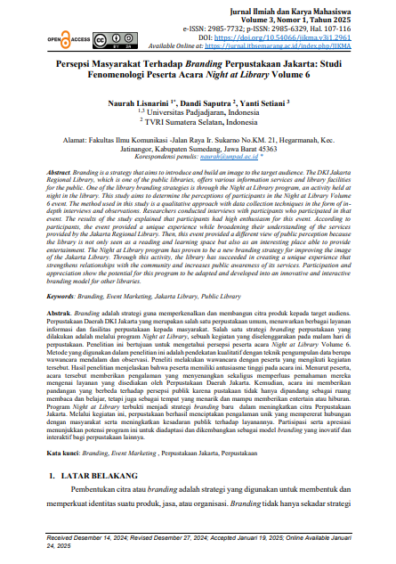
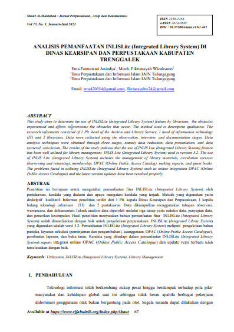
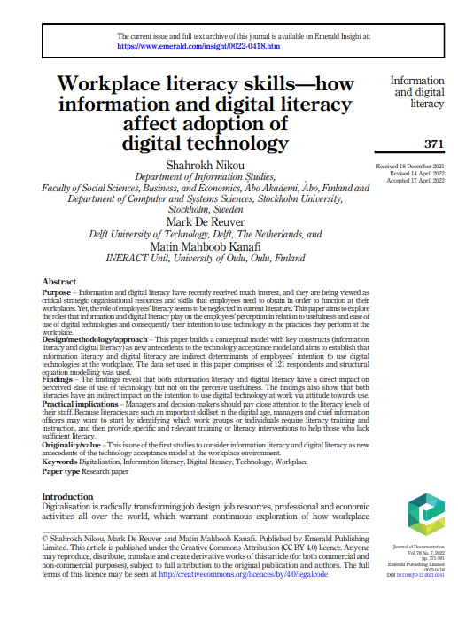
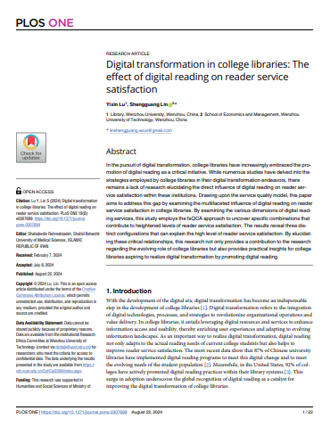
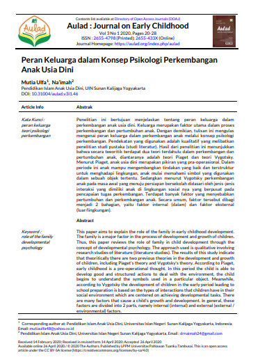
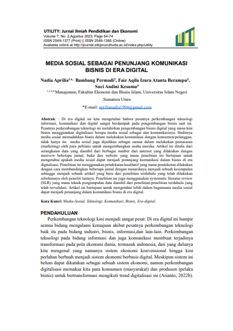
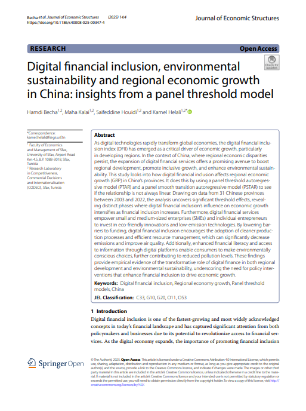
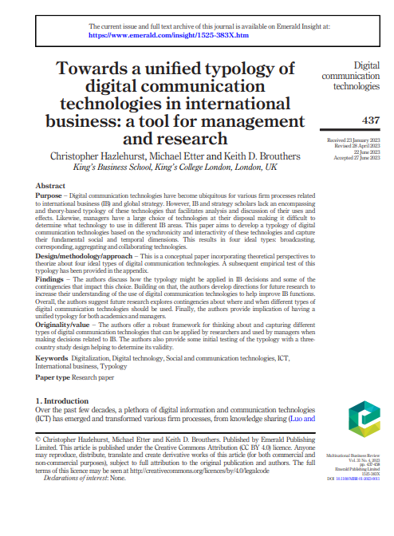

📖 PENTINGNYA PENDIDIKAN PEMAKAI (USER EDUCATION) DI PERPUSTAKAAN SEGORO ILMU SMP NEGERI 2 KALIANGKRIK KABUPATEN MAGELANG

Nurjito A.S
📖 Persepsi Masyarakat Terhadap Branding Perpustakaan Jakarta: Studi Fenomenologi Peserta Acara Night at Library Volume 6

Naurah Lisnarini, Dandi Saputra, Yanti Setiani
📖 ANALISIS PEMANFAATAN INLISLite (Integrated Library System) DI DINAS KEARSIPAN DAN PERPUSTAKAAN KABUPATEN TRENGGALEK

Ema Fatmawati Anindya, Moch. Fikriansyah Wicakssono
📖 Workplace literacy skills—how information and digital literacy affect adoption of digital technology

Shahrokh Nikou, Mark De Reuver, Matin Mahboob Kanafi
📖 Digital transformation in college libraries: The effect of digital reading on reader service satisfaction

Yixin Lu, Shengguang Lin
📖 Peran Keluarga dalam Konsep Psikologi Perkembangan Anak Usia Dini

Mutia Ulfa, Na'imah
📖 Media Sosial Sebagai Penunjang Komunikasi Bisnis di Era Digital

Nadia Aprilia, Bambang Permadi, Faiz Aqila Izura Atanta Berampu, Suci Andini Kesuma
📖 Media Sosial Sebagai Penunjang Komunikasi Bisnis di Era Digital
Nadia Aprilia, Bambang Permadi, Faiz Aqila Izura Atanta Berampu, Suci Andini Kesuma
📖 Personal Branding Digital Natives di Era Komunikasi Media Baru (Analisis Personal Branding di Media Sosial Instagram)
Oryza Devi Salam
📖 Digital fnancial inclusion, environmental sustainability and regional economic growth in China: insights from a panel threshold model

Hamdi Becha, Maha Kalai1, Saifeddine Houidi, Kamel Helali
📖 Towards a unified typology of digital communication technologies in international business: a tool for management and research

Christopher Hazlehurst, Michael Etter and Keith D. Brouthers